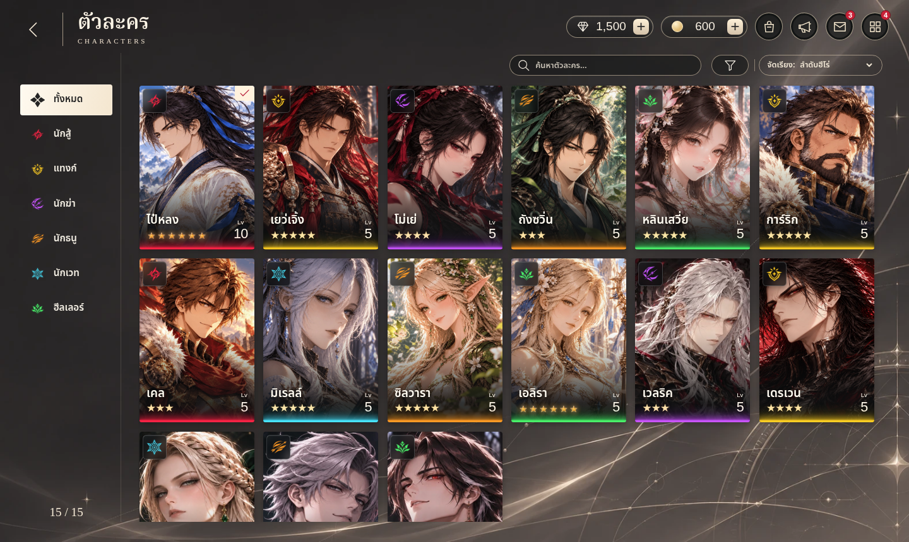
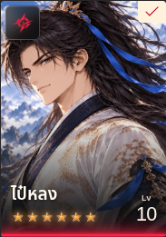
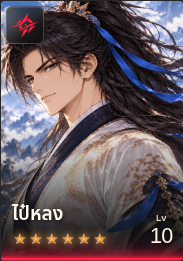

รูปนักสู้36→41px ส่วนสายอื่นคง36px และช่องกระจกยัง48px ทั้งหมด เอาติ๊กถูกและพื้นสี่เหลี่ยมมุมขวาบนออกจากการ์ด โดยไม่เปลี่ยนฮีโร่หลักในเซฟ ภาพจากเกมจริง ไม่รีทัช ใช้เซฟ QA แยกจากผู้เล่น



Desktop เท่านั้น · ยังไม่ merge/deploy